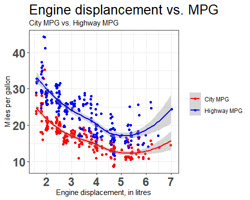

11 Themes, Labels, and Scales
Theme은 data관련 요소들 외의 것들에 대한 설정을 위해서 사용됩니다. 즉, 제목이나 라벨, 배경, 범례 등의 색, 위치, 크기, 모양 등을 설정하는데 사용합니다. 주의할 부분은 해당 택스트 등 데이터를 변경하는 것이 아니고 보여지는 모습만을 바꿀 수 있다는 것 입니다. 택스트 설정은 labs를 사용합니다. 예제를 가지고 몇 가지 실습을 해 보겠습니다. 먼저 labs라는 명령어로 x축, y축, Title 등을 설정할 수 있습니다. 참고로 xlab(), ylab() 등의 함수도 x축, y축 라벨을 설정하는데 사용될 수 있지만 여기서는 labs만을 사용하도록 합니다.
ggplot(mynewdata, aes(x=classes, fill=bloodtype)) +
geom_bar(position="dodge") +
labs(x='Four classes',
y='Number of students',
title='Blood type distribution',
subtitle = 'Blood type distribution from the 200 students',
fill='Blood Types') 위 코드에서 labs에서 설정할 수 있는 옵션은 title, subtitle과 x축, y축 라벨 그리고 범례의 title까지 가능합니다. 특히 ggplot 명령에서 aes(fill=bloodtype)이 사용되었으므로 범례의 title은 fill="Blood types"로 설정해야 하며 만약 aes(color=bloodtype)으로 사용되었을 경우에는 color="Blood types"으로 설정합니다. 참고로 범례의 label을 설정하는 방법은 다음과 같이 scale_fill_discrete 함수의 labels 옵션을 사용하면 됩니다. element_blank()는 택스트를 공백으로 설정할 때 사용합니다. 아래 나올 scale 관련 내용과 함께 이해하시면 좋습니다.
ggplot(mynewdata, aes(x=classes, fill=bloodtype)) +
geom_bar(position="dodge") +
scale_fill_discrete(name=element_blank(), labels=c("A type", "AB type", "B type", "O type"))이제 본격적으로 Theme으로 그래프를 장식해 보도록 합니다. Theme 관련된 옵션들은 https://ggplot2.tidyverse.org/reference/theme.html 이곳을 참고하시기 바랍니다. 여기서 mapping은 그대로인채로 모양 등의 설정을 바꿔가면서 그래프의 형태를 확인하는 작업이 반복되므로 다음과 같이 myplot이라는 변수에 기본이 되는 ggplot 코드를 저장하고 이후 + 연산자를 사용해서 옵션을 바꿔가며 편리하게 코드를 재사용 할 수도 있습니다.
myplot <- ggplot(mynewdata, aes(x=classes, fill=bloodtype)) +
geom_bar(position="dodge") +
labs(x='Four classes',
y='Number of students',
title='Blood type distribution',
subtitle = 'Blood type distribution from the 200 students',
fill='Blood Types')
myplot + theme_bw()위 theme_bw() 함수는 theme의 세부 사항 몇 가지를 미리 설정해 놓아서 (배경을 white 색, 눈금을 회색으로 바꾸는 등) theme 설정을 위한 일련의 과정을 한번에 수행하도록 만든 함수 입니다. theme을 이용한 설정은 plot, axis, legend, panel, facet 등에 적용할 수 있으며 따라서 다음 코드와 같이 해당하는 요소를 참고할 때 . 기호로 구분된 옵션 이름을 사용합니다. 값을 지정할 때에는 element_xxx의 패턴으로 이루어진 함수를 사용합니다. 다음은 각각 plot과 panel 배경색을 바꾸는 코드 입니다.
myplot + theme(plot.background = element_rect(fill="gray"))myplot + theme(panel.background = element_rect(fill="gray"))myplot +
theme(
panel.background = element_rect(fill="gray"),
plot.background = element_rect(fill="gray")
)또한 축이나 라벨 택스트의 모양도 바꿀 수 있습니다.
myplot +
theme(
axis.line = element_line(arrow = arrow(angle = 15, length = unit(.15,"inches"))),
axis.text = element_text(face = "bold", size = 12, angle = 30),
axis.text.x = element_text(color="blue", size=18)
)myplot +
theme(
plot.title=element_text(size=18, face = "bold", color="red", hjust=0.5),
plot.subtitle = element_text(size=18, face = "bold", color="gray")
)위 예제 외에도 다양한 그래프를 그릴 수 있으며 모든 사용법을 외워서 사용하기 보다는 사용할 때 마다 필요한 함수와 옵션을 찾아서 사용하다 보면 점차 익숙해질 것 입니다. 가장 정확한 참고 자료는 공식 reference 페이지를 참고하면 좋으며 https://ggplot2.tidyverse.org/reference/index.html 이 외에도 다른 사람들이 만들어 놓은 그래프를 https://exts.ggplot2.tidyverse.org/ 참고해서 원하는 목적에 맞는 코드를 가져다 사용할 수 있습니다.
본 장에서 마지막으로 소개할 내용은 Scale 입니다. 앞서 어떤 데이터를 x축, y축 또는 group이나 color로 맵핑할지를 결정하는 함수가 aes였다면 scale은 어떻게 (위치, 색상, 크기, 모양 등) 맵핑할 것인가를 설정하는 방법입니다. 함수 형태는 scale_<aesthetic>_<type> 이며 <aesthetic>과 <type>에 해당하는 (미리 지정된) 단어를 넣어주면 되겠습니다. 예를 들어 앞서 예제에서 fill=bloodtype로 혈액형 데이터를 막대그래프의 색을 칠하는데 사용했다면 scale_fill_manual 함수로 어떤 색을 칠할지를 정해주는 방식입니다. 다음 몇 가지 예를 실습해 보고 이해해 봅니다.
myplot +
scale_fill_manual(values = c("orange", "skyblue", "royalblue", "blue"))
myplot +
scale_fill_brewer(palette="BrBG")두 번째 scale_fill_brewer의 경우는 brewer라는 (https://colorbrewer2.org/) 미리 지정된 색의 조합을 가져와 사용하는 방식입니다. ?scale_fill_brewer의 Palettes 섹션을 보시면 사용 가능한 팔레트의 이름이 나와 있으며 위 예제 에서는 BrBG라는 이름의 팔레트를 사용했습니다. 아래는 viridis 라는 이름의 팔레트이며 (https://bids.github.io/colormap/) 이러한 팔레트는 R 뿐만 아니라 python, Matlab 등의 다른 프로그래밍 언어에서도 사용할 수 있도록 라이브러리를 제공하고 있습니다.
myplot +
scale_fill_viridis_d()참고로 앞서 설명한 바와 같이 aes(fill=bloodtype)이 사용되었으므로 scale_fill_viridis_d을 사용했으며 만약 aes(color=bloodtype)으로 사용되었을 경우에는 이에 맞는 scale_fill_viridis_d으로 설정해야 합니다. 맵핑된 데이터가 연속형일 경우에는 (위 학급 예제의 혈액형은 4개의 혈액형으로 나뉘는 범주형 데이터임) scale_fill_gradient, scale_fill_distiller 등의 연속형 데이터에 맞는 scale 함수를 사용해야 합니다. 또한 데이터의 스케일이 log나 지수 단위일 경우에도 일 때에도 scale_x_log10() 등의 함수를 이용해서 x축 또는 y축의 스케일을 변경해줄 수 있습니다. 다음은 간단한 형태의 로그 분포 데이터를 생성하고 히스토그램을 그리는 코드입니다.
mydf <- data.frame(x=rlnorm(1000, log(10), log(2.5)))
p <- ggplot(mydf, aes(x=x)) +
geom_histogram()
p위 히스토그램의 x축을 로그 스케일로 전환하고자 할 때 다음과 같이 scale_x_log10() 함수를 추가하면 됩니다.
p + scale_x_log10()11.1 Exercise 6.4
mpg 데이터셋은 38종 자동차의 연비 데이터임. 이 데이터셋을 이용하여 다음 그래프를 그리시오
엔진 배기량과 (displ) 도심연비 (cty)를 비교하는 산포도를 그리고 어떤 연관성이 있는지 설명하시오
위 산포도의 점들은 실제로는 한 개 이상의 데이터가 겹쳐셔 표현된 경우가 많음. ggplot2에서는 이러한 문제를 극복하기 위해서
position="jitter"라는 옵션을 사용할 수 있음. 이 옵션을 적용한 코드를 작성하시오.위 그래프에 배기량과 (displ) 고속도로연비 (hwy) 산포도를 추가하여 다음과 같이
scale_color_manual()함수를 사용해서 “red”와 “blue”로 점들을 표현한 그래프를 그리시오. (참고로 이를 위해서 먼저 다음과 같이 mydf 라는 새로운 데이터프레임을 displ, cty, hwy로 만들고reshape2패키지의melt함수를 이용해서 다음과 같이mydf_mlt데이터를 만들어서 사용합니다.melt함수에 대한 내용은 다음 장에서 설명될 예정입니다. 아래 코드의mydf_mlt데이터의 구조와 이들 데이터가ggplot에서 어떻게 mapping이 이루어 지는지 이해 필요)
library(reshape2)
mydf <- data.frame(displ=mpg$displ, cty=mpg$cty, hwy=mpg$hwy)
mydf_mlt <- melt(mydf, id.vars="displ")
str(mydf_mlt)
- 다음과 같이 배기량과 고속도로/도심 연비의 관계를 나타내는 추세선을 추가하시오 (
geom_smooth이용)

- 아래 그림과 같이 Theme을
theme_bw()를 사용하고 추가로 Title, subtitle, x축, y축 라벨, 그리고 범례의 Title을 변경하시오. (범례의 라벨 설정은scale_color_manual에서labels=c("City MPG", "Highway MPG")으로 설정, 범례의 title을 지울때는name=element_blank(), Title의 택스트 크기는 20, x축, y축의 라벨 텍스트 크기는 18로 설정)
